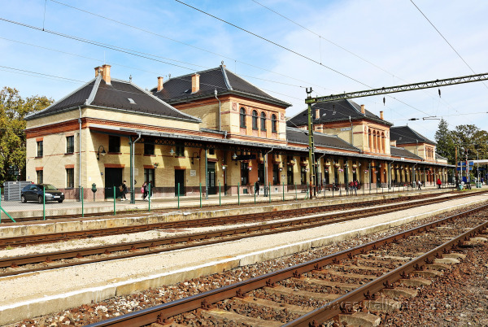
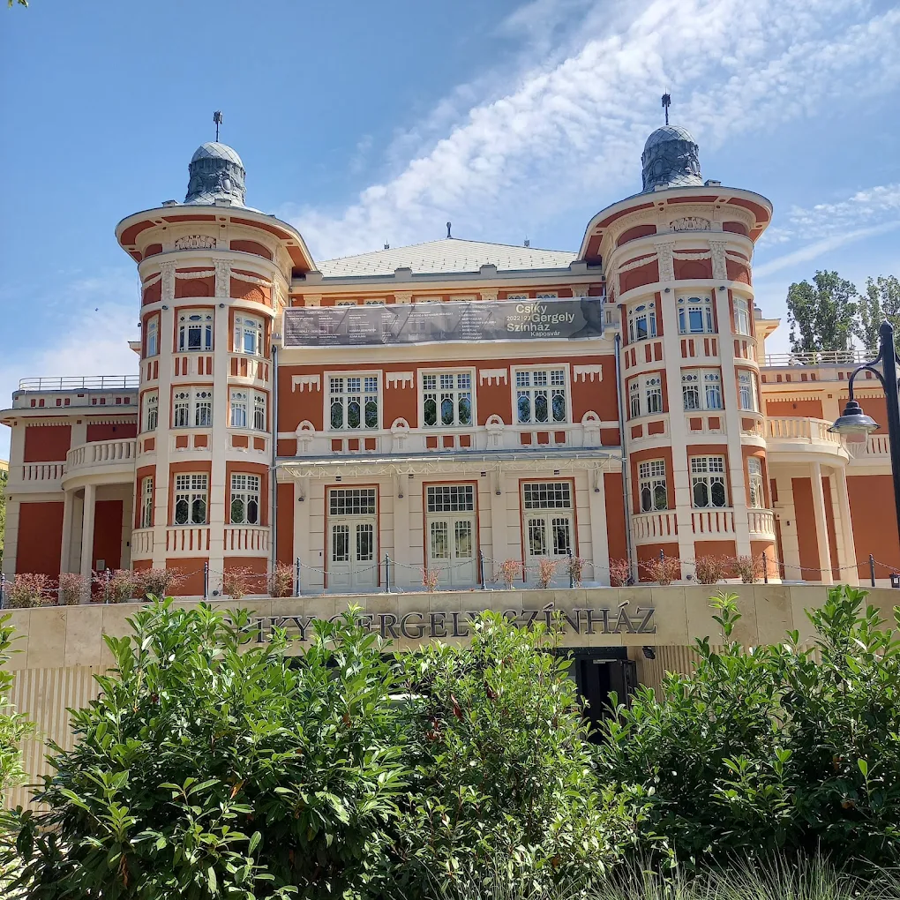
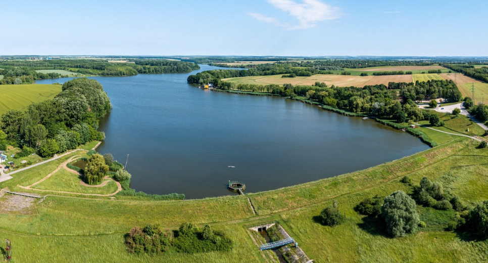
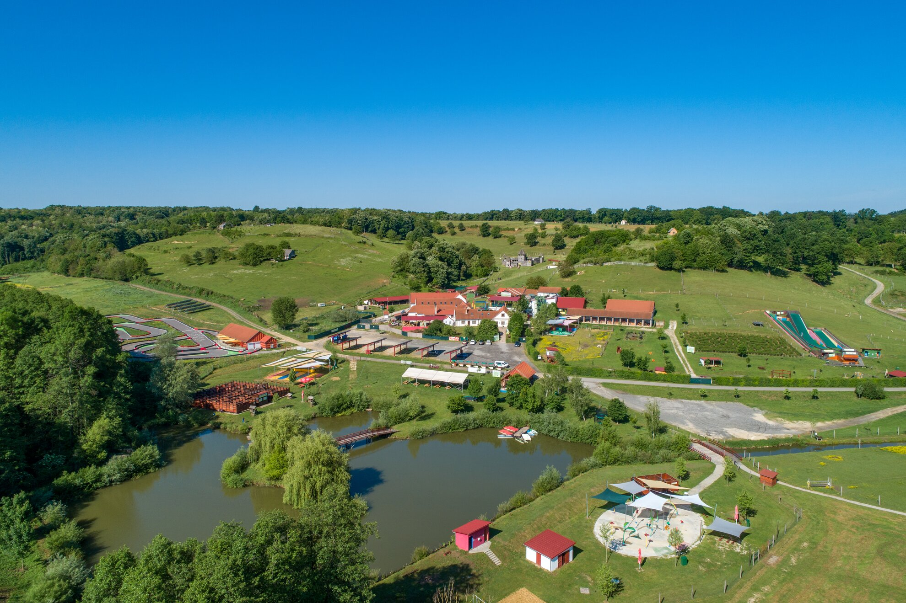
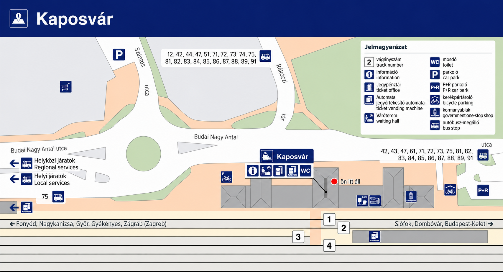

Why should you visit Kaposvár?
Kaposvár is a charming, green city in the heart of Somogy, where culture, nature, and gastronomy meet...

Discover Kaposvár with a single click!


Kaposvár is a charming, green city in the heart of Somogy, where culture, nature, and gastronomy meet...


Built in 1911, an impressive Art Nouveau building, one of the largest capacity theaters in Hungary with regular performances.
Get directions
Located on the outskirts of Kaposvár, Lake Deseda is one of Hungary’s longest artificial lakes. A great spot for fishing, cycling, boating, and hiking, with nature trails and the Fekete István Visitor Centre along its shore.
Get directions
Katica Farm is located in Patca, not far from Kaposvár. A true family experience center offering numerous indoor and outdoor games, a petting zoo, craft workshops, and fun programs for both children and adults — the perfect place for a meaningful, playful day out.
Get directionsRailway station: Baross Gábor utca 2.
Bus station: Áchim András utca 1.
Domestic: Mon–Sun 02:55–22:55
International: Mon–Sun 05:55–17:45
Waiting Room: 04:40–22:30
Restrooms: 06:00–20:00
Lifts are always available.
Accessible restrooms.
Audio passenger information.
MÁVDIREKT: +36 (1) 3 49 49 49
Mobile: +36 (20/30/70) 499 4999
Domestic and international ticket sales,
ticket vending machines, lost and found,
parking near the station.
Select a main category, then a subcategory, and finally a specific place. The map will show only the selected location, and you can request a walking route from the station.
The map can be zoomed and scrolled sideways on mobile devices.
